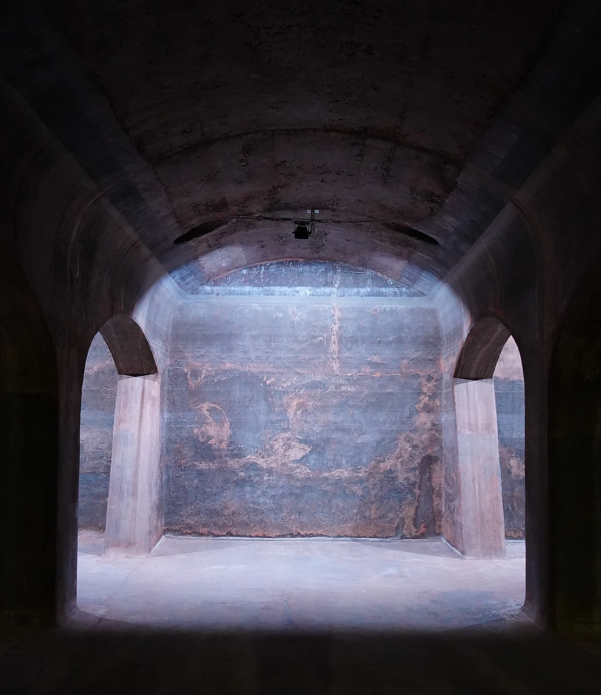
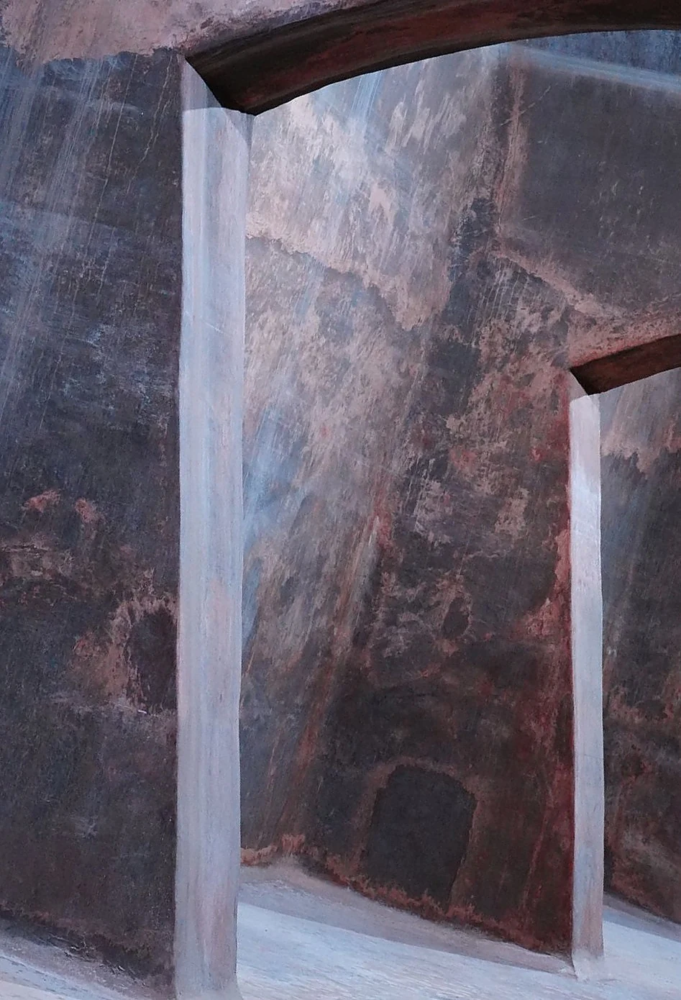

Wenn das Licht fehlt — Fotografieren am alten Wasserreservoir Oberallmend

Vor Kurzem habe ich am alten Wasserreservoir Oberallmend fotografiert. Der Ort hat eine besondere Stimmung, aber das Fotografieren war gar nicht so einfach. Es war ziemlich dunkel und ich musste erst einmal herausfinden, wo ich gutes Licht für meine Bilder finden konnte.
Eine kleine Herausforderung
Wenn es zu dunkel ist, werden Fotos schnell unscharf oder man erkennt nicht mehr alle Details. Ich wollte aber, dass meine Bilder die besondere Atmosphäre des Wasserreservoirs zeigen. Sie sollten nicht einfach nur hell sein, sondern auch die dunkle und etwas geheimnisvolle Stimmung des Ortes behalten.
Deshalb habe ich verschiedene Perspektiven ausprobiert und darauf geachtet, wo das Licht am besten hinfällt. Manchmal macht schon eine kleine Veränderung des Blickwinkels einen grossen Unterschied.
Licht macht viel aus
Beim Fotografieren merkt man schnell, wie wichtig Licht ist. Es kann ein Bild komplett verändern. Mit dem richtigen Licht wirkt ein Motiv spannend, während es bei schlechtem Licht manchmal ganz anders aussieht als erwartet.
Am Wasserreservoir musste ich besonders darauf achten, dass die Bilder nicht zu dunkel werden. Gleichzeitig wollte ich die natürliche Stimmung nicht verlieren. Das war gar nicht so einfach.

Was ich daraus gelernt habe
Durch dieses Shooting habe ich gemerkt, dass man beim Fotografieren manchmal Geduld braucht. Nicht jedes Bild gelingt sofort. Es lohnt sich, verschiedene Einstellungen und Perspektiven auszuprobieren und genauer auf die Umgebung zu achten.
Ich habe auch gelernt, dass ein Foto nicht immer hell sein muss, um gut auszusehen. Gerade Schatten und dunkle Bereiche können ein Bild interessant machen.
Das alte Wasserreservoir Oberallmend hat mir gezeigt, dass auch schwierige Lichtverhältnisse eine spannende Herausforderung sein können. Man muss nur lernen, das Beste daraus zu machen.